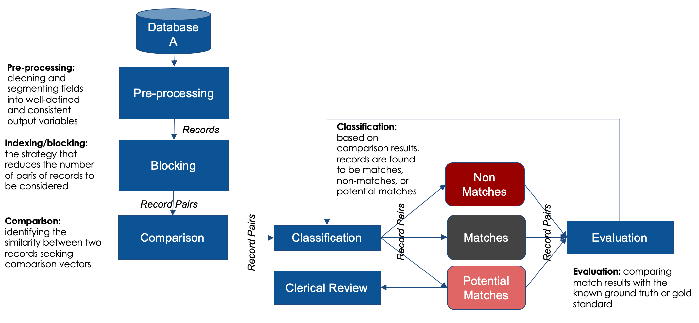
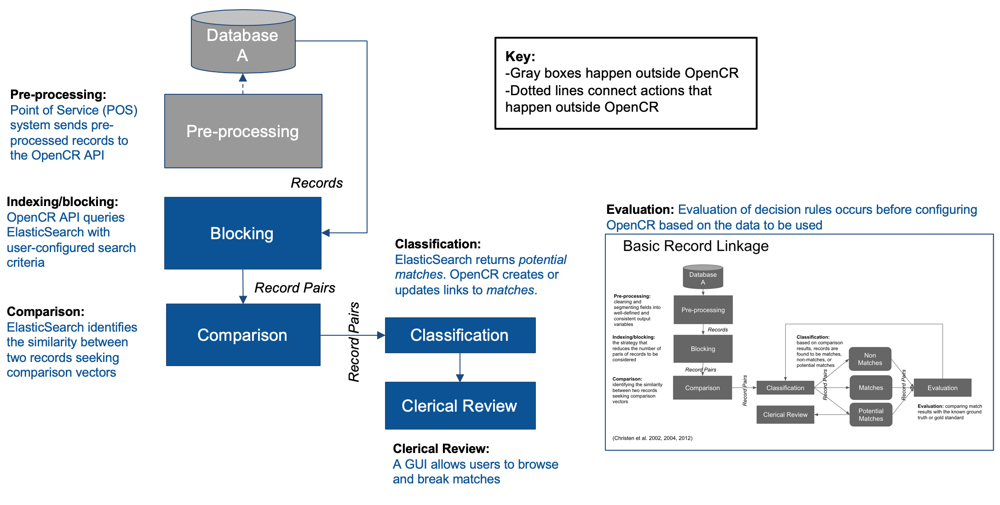

Matching Process
This is an overview of the matching process.
Generic Matching Process
It is helpful to look at a generic matching process first, and then move to to see where OpenCR fits.
This diagram is reproduced from Christen, Peter, 2012, "Data Matching: Concepts and Techniques for Record Linkage, Entity Resolution, and Duplicate Detection"
The diagram is an example of a deduplication process with only one data source.
- Database: The flow begins on the top left at 'Database'.
- Preprocessing: Data from the database source is preprocessed. This means cleaning the data before submission of errors in date formats, data entry mistakes, biologically implausible values, and similar.
- Blocking: This means using filters to be more efficient in queries. For example, filtering on the birth year of 1960 reduces the amount of searching that has to be done because only 1960 is used.
- Comparison: Algorithms compare pairs of records.
- Classification: Records are classified as matches, non-matches, or potential matches.
- Clerical review: For records that are potential matches, they may be reviewed individually.
- Evaluation: This process is a way to understand the matching performance against a known baseline. It is not necessarily built into the client registry but may be conducted using other tools.

OpenCR performs much of the functionality in the matching process.
- Database and preprocessing: The database and cleaning of records is done outside of OpenCR.
- Comparison and classification: In production, ElasticSearch is used for these processes. ElasticSearch is a part of OpenCR.
- Clerical review: There is a UI for viewing and breaking matches.
- Evaluation: This process is conducted externally with other tools, it is not provided as a feature set in OpenCR.

Last update: February 25, 2020